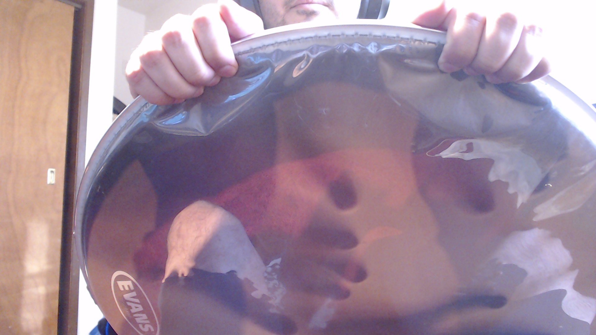
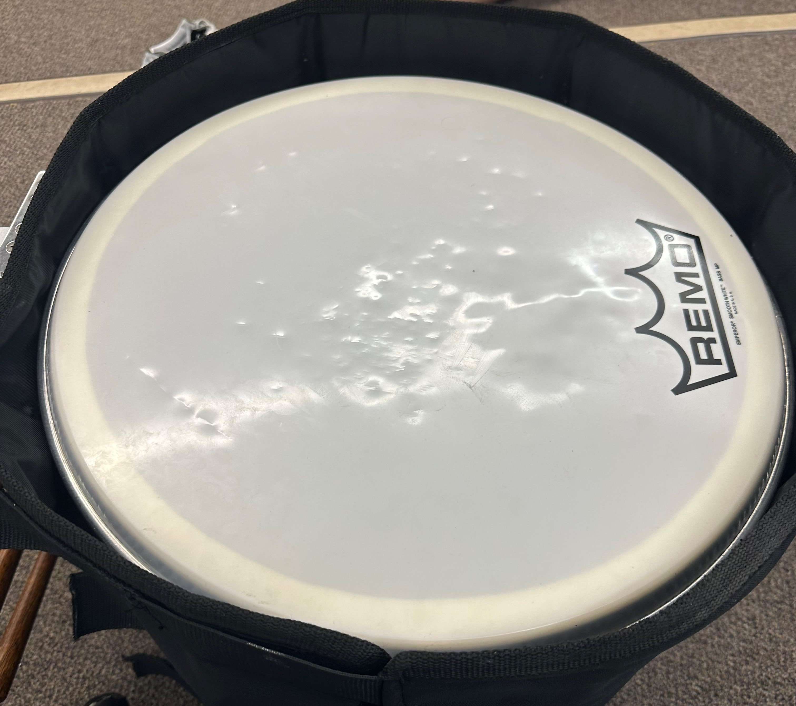

Marching Bass Drum Tunning
Welcome to our Bass Tuning Guide at Bass Logic! Properly tuning your bass drum is essential for achieving the best sound possible. However, tuning a bass drum can be a challenge, especially if you're new to the instrument. That's why we've created this guide to help you tune your bass drum to perfection. We'll provide you with step-by-step instructions and tips to help you achieve the sound you're looking for. Our guide is suitable for bass drummers of all skill levels, so whether you're a beginner or an experienced player, we're confident that you'll find our Bass Tuning Guide helpful.
Prior to Putting on the Bass Head
Before putting on the bass head, press in the edges of the bass head in order to break it in.
Putting on the Drum Head
Put the drum head on the shell, again put a little way on it in order to break in the head.
Attaching the Rim and Drum Lugs
Put the rim then the drum lugs. Finger tighten the drum lugs in a star pattern.
The smaller the drum the less lugs it will have. Similarly the bigger the drum the more lugs it will have. The idea is still the same, tighten in a star pattern as show above.
Tightening the Drum Lugs
Use a drum key to tighten the lugs by doing a quarter of a turn. Do this in the same start pattern as you did when you finger tighten the lugs. The goal key notes from top bass drum to bottom bass are D A D F# A. The notes do not need to be taken up right away, makre sure you are doing quarter turns in the start pattern until you get in range of the designed notes. Keep in mind, D major is the common chord to tune bass drums but can be any other Key as well.